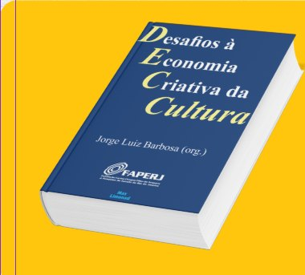

E-book · 2025
Desafios à Economia Criativa da Cultura
Publicação organizada por Jorge Luiz Barbosa, com apoio da FAPERJ, que reúne os debates do setor no estado do Rio. O presidente do Instituto São Paio deu entrevista sobre sustentabilidade e repasse de recursos em São Gonçalo para compor o texto.
Ler o e-book